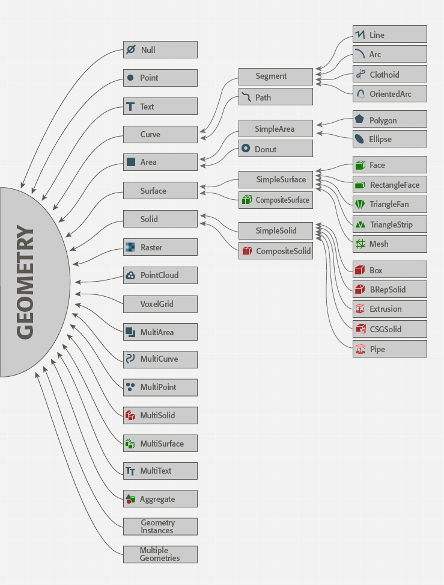
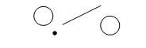

Learning Objectives
After completing this lesson, you’ll be able to:
- Understand FME’s geometry model.
- Explain how aggregates, multi-geometries, and multis work in FME.
Understanding FME’s Geometry Model
FME handles spatial data flexibly through its internal geometry model, ensuring compatibility across the many formats it supports. It decouples geometry from coordinate systems, allowing users to handle spatial attributes and geographic projections independently.
FME’s geometry types encompass standard GIS representations, such as Points, Lines, Polygons, Aggregates, and Multi-Geometries.

These types act as building blocks for spatial data transformation. For example:
- A Point represents a single geographic location.
- A Line connects multiple points.
- A Polygon represents an enclosed area.
As discussed below, collections (aggregates, multis, and multiple geometries) allow for more complex and grouped structures.
Format Geometry Definitions
Formats have geometry definitions that map onto the FME geometry model. FME automatically handles this mapping for you. You can find details about this relationship in the format reader/writer documentation. For example, here is the page for supported geometries for the Esri Geodatabase (File Geodb Open API) format, and here is the page discussing the filegdb_type format attribute that stores the geometry type.
Aggregates
An aggregate is a collection of geometries of any type that FME treats as a single unit. Aggregates may or may not be homogenous and/or hierarchical.
Hierarchical Geometries
A hierarchical geometry is a collection of geometries that may, in turn, contain other collections (aggregates or multis) to an arbitrary depth. A typical case of a hierarchical geometry is an aggregate that contains aggregates. This nested behavior allows for the representation of hierarchical relationships between geometries.
For example, a hierarchical aggregate named House may contain other aggregates named Roof and Walls, where Walls is an aggregate that contains four faces. The data may store properties associated with the house as a whole as traits at the top level but store properties that only pertain to a sub-group, such as shingle type, as traits on aggregate Roof.
Aggregates may have a transformation matrix. They may also have front or back appearances and may be single or double-sided.
Homogeneous Aggregates
A homogeneous aggregate comprises features of the same fme_type.

Aggregates that contain other collections (aggregates or multis) do not preclude them from being homogeneous. Only an aggregate's "leaf" nodes must share the same type.
For example, a collection of only surface geometries within an aggregate would be considered a homogeneous aggregate (fme_type = fme_surface).
FME may represent some types of homogeneous aggregates as multi geometries. For example, FME could represent a collection of only Points as a MultiPoint Geometry.
Homogeneous Aggregate Attributes
- fme_geometry = fme_aggregate
- fme_type = <type of contained geometries>
Non-Homogeneous Aggregates
A non-homogeneous aggregate comprises features of differing geometry types.

For example, a collection of point, line, and polygon geometries within an aggregate would be considered a non-homogeneous aggregate (fme_type = fme_collection).
Non-Homogeneous Aggregate Attributes
- fme_geometry = fme_aggregate
- fme_type = fme_collection
Multiple Geometries
A multiple geometry is a collection of parts that are interpreted as independent geometries. Each part is treated as its own complete geometry, separate from the others.
For example, a multiple geometry may contain two parts: one named Area, which contains an area representation of a feature, and one named Point, which contains a point representation of the same feature.
Multiple geometries are different from multi geometries, such as MultiPoint and others (see below).
FME and other systems often successfully handle multiple geometries the same way as aggregate geometries, even though they are conceptually slightly different from aggregates. Several database formats support reading and writing of multiple geometries.
MultipleGeometrySetter and MultipleGeometryFilter are two transformers that are helpful for working with multiple geometries in a workspace.
Multiple Geometry Attributes
- fme_geometry = fme_aggregate
- fme_type = fme_collection
Coordinate Systems and Multiple Geometries
To preserve the coordinate system of multiple geometry features when writing to a database format, with each geometry in its own column, you must set the Spatial Reference System Identifier (SRID) of the coordinate system as a trait on each of the multiple geometries. Use the following transformers, in order, for each geometry:
- CoordinateSystemExtractor to retrieve the coordinate system name as attribute Coordsys (change from the default _coordsys).
- GeometryPropertySetter to set attribute Coordsys as a trait. (Specify Property to Set: Traits from Attributes and Source Attributes: Coordsys.)
- MultipleGeometrySetter to aggregate the geometries.
For detailed instructions on reading and writing multiple geometries, see this tutorial.
Multis
A multi is a defined collection of geometries of a single, common type that FME treats as a single unit. Multis cannot be nested or have a hierarchy within them.
Many multis exist in the FME geometry model:
- MultiPoint
- A multipoint is a defined collection of Point geometries.
- fme_geometry = fme_aggregate
- fme_type = fme_point
- MultiText
- A multitext is a defined collection of Text geometries.
- fme_geometry = fme_aggregate
- fme_type = fme_text
- MultiCurve
- A multicurve is a defined collection of Curve geometries.
- fme_geometry = fme_aggregate
- fme_type = fme_line
- MultiArea
- A multiarea is a defined collection of Area geometries.
- fme_geometry = fme_aggregate
- fme_type = fme_area
- MultiSurface
- A multisurface is a defined collection of Surface geometries.
- Multisurfaces may have front or back appearances and be single or double-sided.
- fme_geometry = fme_aggregate
- fme_type = fme_surface
- MultiSolid
- A multisolid is a defined collection of Solid geometries.
- Optionally, multi solids may be single or double-sided and may have front or back appearances.
- fme_geometry = fme_aggregate
- fme_type = fme_solid